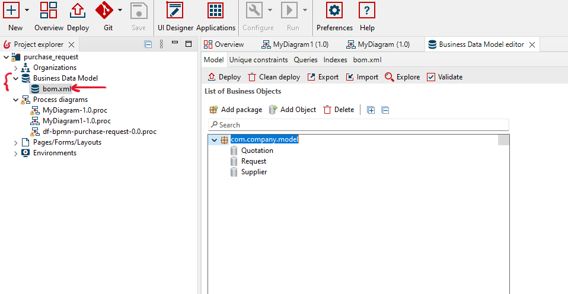
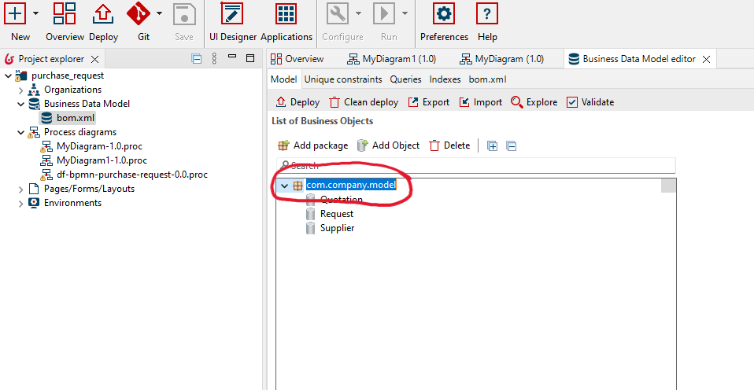
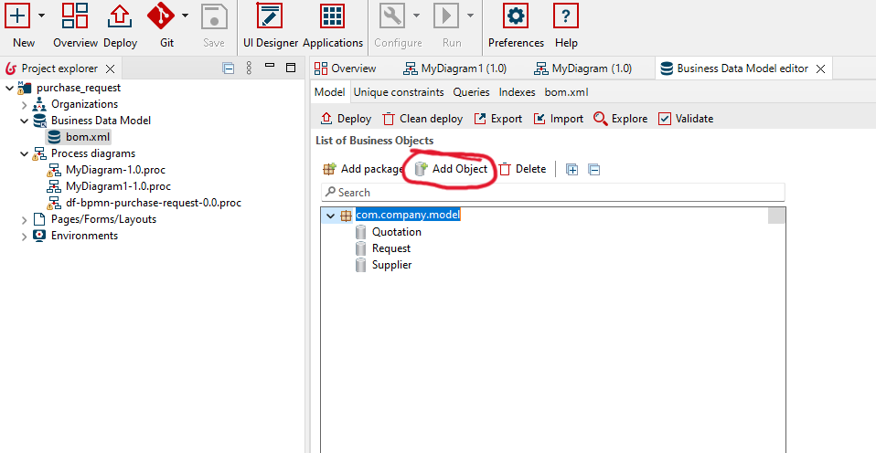
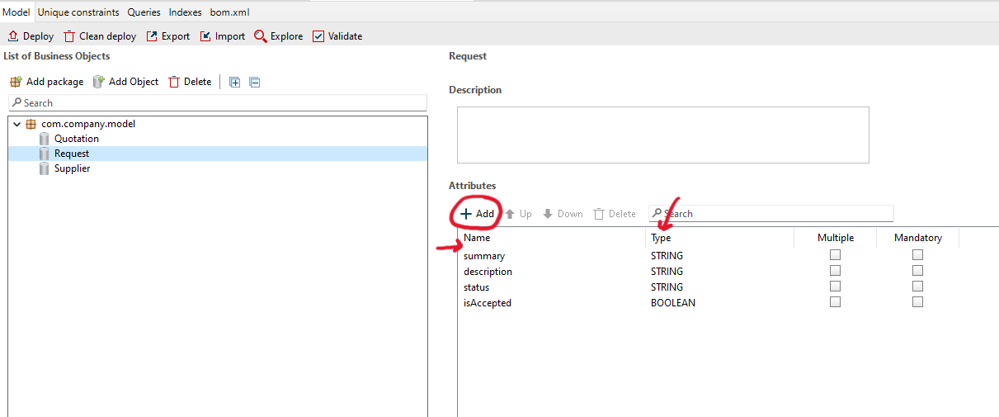
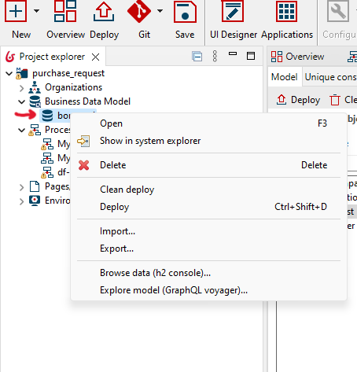
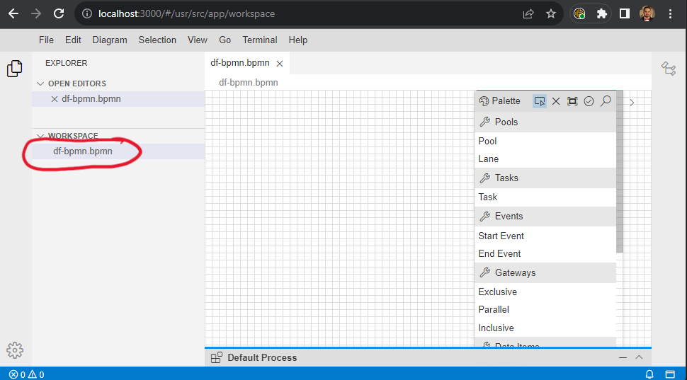
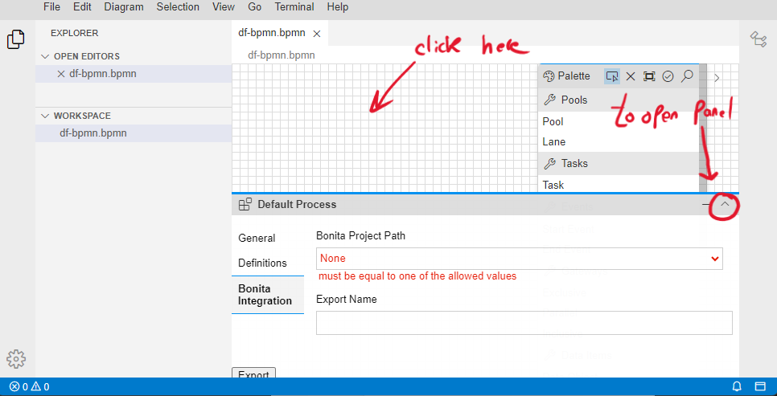

Add data object
Follow the next steps to add the UML objects within the BDM:-
Click on bom.xml in the Business Data Model
 -
Select a package (you can add you own packages)
 -
Click on "Add Object"
 -
Change the name of the object and then define the object attributes and their types

Add UML objects to the DBM
Follow the steps described above to add UML objects to the DBM.
Add data information to the DBM
In this exercice, we suppose that the suppliers already stored in the BDM (database). Therefore, you need to add it manually to the database.-
Right click on the BDM "bom.xml" file. Then, click on "Browse data (h2 console) ...".
 -
The database should automatically opened in the browser. Double click on "Supplier", and then click on
"RUN". Then, click on "Edit" to edit the database table and to start adding information.

-
Click on icon "+" and add new suppliers (2 or 3).

Access DBM in DF-BPMN tool
After creating BDM objects, you should create a reference of the database within DF-BPMN tool. This reference can help you to access the objects within DF-BPMN tool during the modeling phase (when you use data store objects).
- Open DF-BPMN tool: http://localhost:3000/#/usr/src/app/workspace
-
Open your project in DF-BPMN tool, by double click on the project file.
 -
Click on white space, and then Open the property panel.
 -
Click on "Bonita Integration", and then select your Bonita project based on the Bonita project name. The
name of the project is the last folder in the path. Example: "hr_salary_calculation" is a Bonita project
name.

-
Save your project "crtl + s" and refresh your browser. Now, during the modeling you can access the data
object by their name and their attributes.